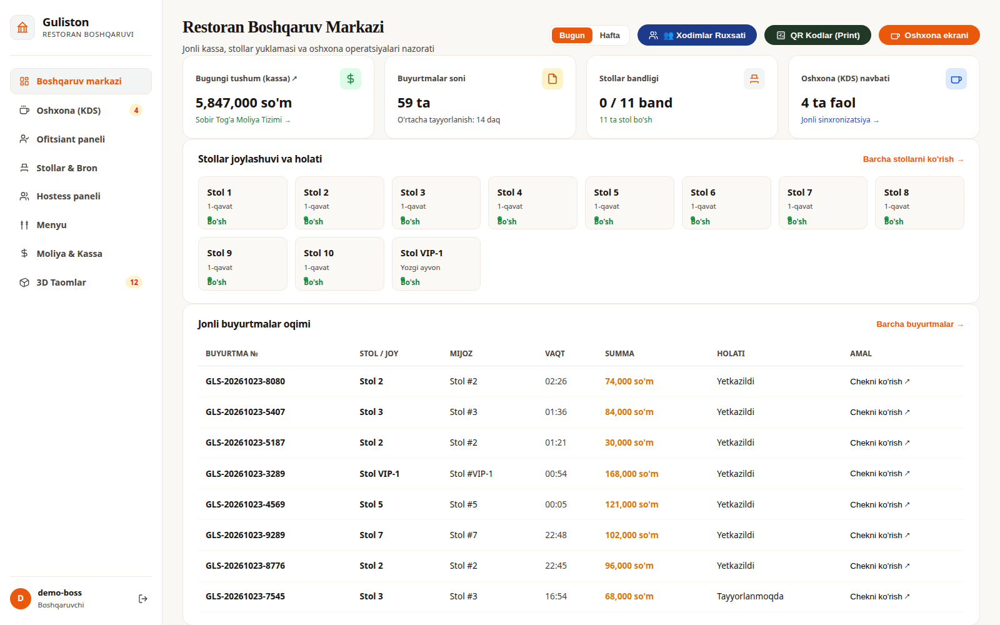
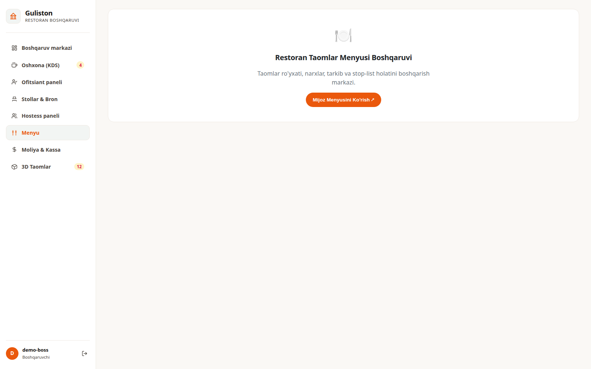
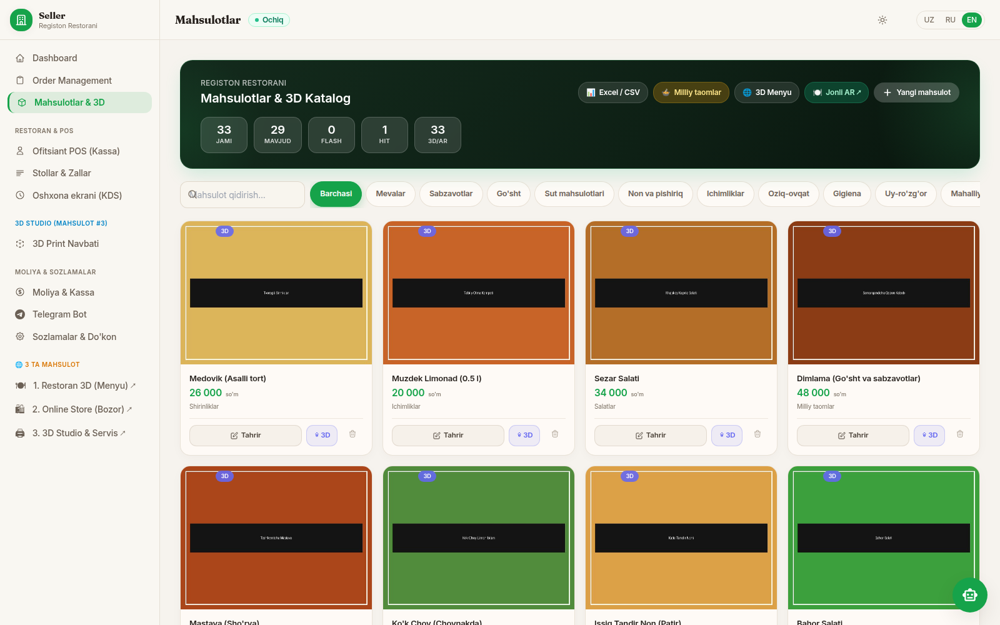
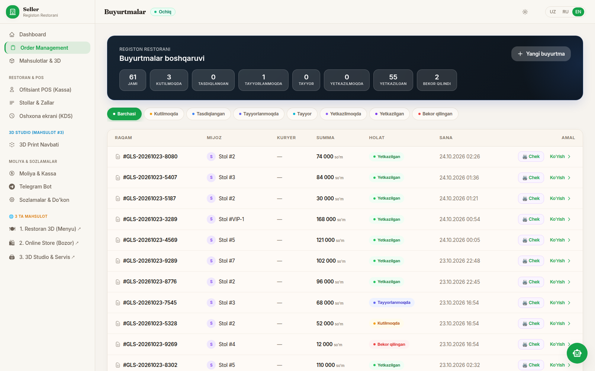
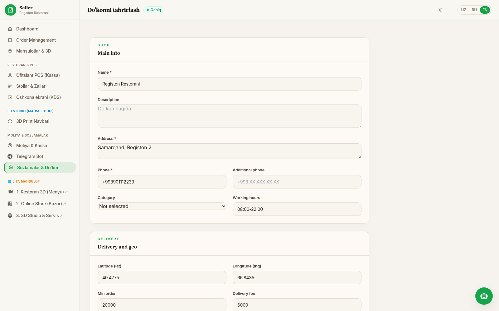
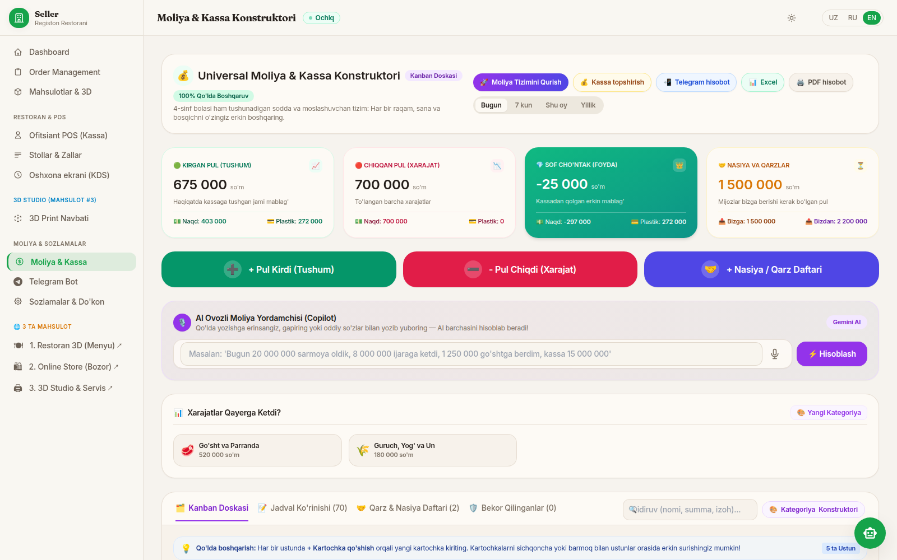

Xulosa (rost)
Admin qismi bitta emas, ikkita alohida panel va ular bir-biriga mos kelmaydigan raqam ko'rsatadi:
1. «Seller» paneli (
Funksiya ko'p va ishlaydi: buyurtmalar, mahsulotlar, stollar, KDS, moliya, Telegram. Lekin boshqa mahsulotlar (Bozor, 3D Print) bilan aralash, qisman inglizcha, tashqi CDN'larga bog'liq.
/seller/, Django shablonlari). Restoran egasi shu yerga tushadi.Funksiya ko'p va ishlaydi: buyurtmalar, mahsulotlar, stollar, KDS, moliya, Telegram. Lekin boshqa mahsulotlar (Bozor, 3D Print) bilan aralash, qisman inglizcha, tashqi CDN'larga bog'liq.
2. «Boshqaruv» paneli (
Toza va yangi uslubda, lekin «Bugungi tushum» butun davr tushumini ko'rsatadi, «Menyu» bo'limi bo'sh.
/admin/, React). Faqat super-admin kiradi.Toza va yangi uslubda, lekin «Bugungi tushum» butun davr tushumini ko'rsatadi, «Menyu» bo'limi bo'sh.
Restoran egasiishlaydi, lekin chalkash
Moliyachiyaxshi asos, hisobot yetarli emas
Buxgaltertayyor emas
Mehmon (admin orqali)chek bor, rasmlar yo'q
1. Restoran egasi (biznes mijozi)
Egasi nima xohlaydi: ertalab kirib «bugun qancha topdim, nima band, nimani to'ldirish kerak» ni 10 soniyada ko'rish; taom narxi va rasmini o'zi o'zgartirish; xodimlarni boshqarish.
Yaxshi
- Bitta kirish (
/admin/login/), roli bo'yicha tegishli panelga yo'naltiradi. - Buyurtmalar: holat bo'yicha filtr, har buyurtmada «Chek» va «Ko'rish».
- Mahsulotlar: qo'shish, tahrirlash, 3D yaratish, Excel/CSV yuklash, toifalar.
- Stollar va QR, KDS, Telegram bot sozlamalari bir joyda.
Muammolar
- P0 Sharhlar sahifasi (
/seller/reviews/) sharh bo'lsa 500 xato beradi. Tekshirildi:NoReverseMatch: admin_review_delete. Mehmon birinchi sharh qoldirgach egasi sahifani ocha olmaydi. - P0 React panelda «Bugungi tushum (kassa)» = 5 847 000 so'm, vaholanki bugungi tushum 675 000 (bazada tekshirildi). 5 847 000 — butun davr yig'indisi. «Buyurtmalar soni 59» ham bugungi emas, butun davr bo'yicha. Egasi noto'g'ri raqam bo'yicha qaror qiladi.
- P1 Boshqa mahsulotlar aralashgan. Chap menyuda «Online Store (Bozor)», «3D Studio & Servis», «3D Print Navbati» turadi. Restoran egasiga kerak emas.
- P1 Til aralash. Menyu va sozlamalar formasi inglizcha («Order Management», «Main info», «Delivery and geo», «Name», «Address»), joylari o'zbekcha. UZ/RU/EN tugmasi bor, lekin tarjima to'liq emas.
- P1 React panelning «Menyu» bo'limi bo'sh (faqat sarlavha va «Mijoz menyusini ko'rish» tugmasi). Taomni tahrirlash faqat Seller panelda. Egasi ikki panel orasida adashadi.
- P1 Soxta taom rasmlari. 28 taomdan 22 tasining «rasmi» rangli kvadrat, o'rtasida qora yozuv. Panel buni ko'rsatmaydi ham, ogohlantirmaydi ham.
- P1 Internetga bog'liq. Panel
cdn.tailwindcss.com(dasturchilar uchun, production uchun emas) va Google Fonts / Material Icons dan yuklanadi. Restoran Wi-Fi'si sekin bo'lsa yoki uzilsa, panel bezaksiz chiqadi va ikonlarinventory_2,receipt_longkabi matn bo'lib qoladi. Menda bu aynan shunday ko'rindi. - P2 Ro'yxatlar sahifalanmaydi. Buyurtmalar sahifasi 61 buyurtmada 312 KB HTML. Kuniga 150 buyurtmada bir yildan keyin ochilmay qoladi.





2. Moliyachi
Moliyachi nima xohlaydi: kun oxirida kassani yopish, naqd va plastik bo'yicha solishtirish, xarajatlar qayerga ketganini ko'rish, nasiya va qarzlarni nazorat qilish.
Yaxshi (tekshirilgan)
- Kirim, chiqim, sof qoldiq kartalari naqd va plastik bo'yicha. Sana filtri: Bugun / 7 kun / Shu oy / Yillik (Seller panelda).
- Nasiya va qarz daftari to'g'ri hisoblaydi: «Bizga 1 500 000 / Bizdan 2 200 000» (3 200 000 − 1 000 000 to'langan = 2 200 000 ✓).
- Xarajat kategoriyalari, «Kassa topshirish», Telegram hisobot, storno (bekor qilish) mexanizmi.
- Parallel so'rovlarda pul ikki marta hisoblanmaydi (avtomatik testlar PostgreSQL'da: qarz to'lovi, kirim, stol yopish).
Muammolar
- P0 Ikki panel ikki xil raqam. Seller «Bugun» tushum 675 000, React «Bugungi tushum» 5 847 000. Moliyachi qaysi biriga ishonishni bilmaydi (roadmap R6-4).
- P1 React moliya API sana filtrini qabul qilmaydi va ro'yxatni sahifalamaydi.
periodvarangeparametrlari bilan so'rov bir xil 19 KB javob berdi (barcha 70 yozuv). Bir yildan keyin minglab yozuv har ochilishda yuklanadi. - P1 Kanban doskasi cheksiz uzun: «Kassaga kirdi» ustuni 54 ta kartadan iborat, butun sahifa 12 767 piksel balandlikda. Kunlik ish uchun noqulay, sana bo'yicha cheklanmagan.
- P1 Smena ochish/yopish va Z-hisobot yo'q. «Kassa topshirish» tugmasi bor, lekin kunlik Z-hisobot (naqd, karta, chiqim, nasiya, kassadagi qoldiq) kodda yo'q (R6-2).
- P1 «Sof cho'ntak (FOYDA)» aslida foyda emas, pul oqimi. U tushum − chiqim (−25 000). Xomashyo sotib olish tannarx emas, investitsiya foyda hisobiga kirmasligi kerak (R6-6). Moliyachi «foyda» so'zini noto'g'ri tushunadi.
- P2 Aralash to'lov (naqd + karta), chegirma, xizmat haqi va «nasiyaga yopish» hisobni yopishda yo'q (R6-5).
- P2 «AI Ovozli yordamchi» (Gemini) moliya matnini tashqi AI xizmatiga yuboradi. Egasi bundan xabardor bo'lishi va uni o'chira olishi kerak (bu sahifada o'chirish sozlamasi ko'rinmadi).

3. Buxgalter
Buxgalter nima xohlaydi: davr bo'yicha toza hisobot (Excel/PDF), har kirim buyurtmaga bog'langan, o'zgartirib bo'lmaydigan tarix, soliq va fiskal chek.
Yaxshi
- Har buyurtmaga faqat bitta faol kirim (bazada cheklov bilan), shuning uchun daromad ikki marta yozilmaydi.
- Tranzaksiyalar o'chirilmaydi: storno qilinadi; «Joyi o'zgartirilganmi» ustuni va audit jurnali bor. Qarz yozuvlari endi yashiriladi, o'chmaydi.
Muammolar
- P0 «Excel» eksport aslida CSV va har qator boshiga ko'rinmas BOM belgisi (U+FEFF) qo'shiladi. Sabab: kod
charset=utf-8-sigbilanwrite()qiladi va BOM'ni yana qo'lda yozadi. Birinchi ustun (ID) Excel va buxgalteriya dasturlarida buziladi. Tekshirildi: har qator79,23.10.2026,…ko'rinishida. - P1 Eksport davr bo'yicha cheklanmaydi (barcha 70 qator), kategoriya nomida emoji bor (
🌾 Guruch…), buyurtma raqami alohida ustun emas (izohga yopishgan), avtomatik yozuvlarda «Kiritgan xodim: Admin». - P1 «PDF hisobot» aslida brauzer chop etadigan HTML; sarlavhada inglizcha oy nomi («October 2026 oylik hisoboti»). Qog'ozga chiqishi (58/80 mm, A4) tekshirilmagan (R6-3).
- P1 Fiskal chek (OFD) yo'q va QQS/soliq ustunlari yo'q. O'zbekistonda qonuniy talab. Provayder va kalitlarni egasi tanlaydi (R6-7).
- P2 Davrni yopish (qulflash) yo'q: o'tgan oy yozuvlariga hali ham yangi yozuv kiritish mumkin.
4. Mehmon (admin qaysi natijani mehmonga beradi)
- Chek: har buyurtmada «Chek» sahifasi bor; yaxshi. Chop etish sifati va fiskal chek yo'q (yuqoriga qarang).
- QR stendlar: admin QR stendlarini chop etadi. QR doimiy tasodifiy havola bo'lgani yaxshi (stol raqamini topib bo'lmaydi).
- Taom rasmlari: mehmon menyuda ko'radigan rasmlarni egasi yuklaydi, lekin 28 dan 22 tasi hali soxta. Admin bu haqda aytmaydi.
- Stop-list: oshpaz tugagan taomni qo'yadi, mehmon menyusidan yo'qoladi (R5 da bajarilgan). Egasi paneldan ko'rishi va boshqarishi uchun «Menyu» bo'limi kerak, u bo'sh.
5. Xavfsizlik va muhandislik (qisqa)
- P1
admin_review_deletefaqatlogin_required: sharhni do'koniga qaramay istalgan kirgan foydalanuvchi o'chira oladi (bozor URL'larida ishlaydi; restoran URL'larida umuman yo'q, shuning uchun sahifa 500). Do'kon bo'yicha cheklash kerak. - P1 Tashqi CDN:
cdn.tailwindcss.combrauzerda har safar CSS yig'adi (sekin, rate-limit, tashqi kod ishonchi). Lokal yig'ilgan CSS va o'z shriftimiz kerak (6 yillik chidamlilik talabi). - P2 Ikki panel ikki xil kod bazasida: har moliya o'zgarishi ikki joyda qilinadi, shuning uchun raqamlar farq qilyapti. Uzoq muddatda bitta panel kerak.
Topilgan xatolar jadvali
| № | Xato | Kim sezadi | Daraja | Qanday tekshirildi |
|---|---|---|---|---|
| 1 | /seller/reviews/ sharh bo'lsa 500 | Egasi | P0 | Brauzerda: NoReverseMatch |
| 2 | React «Bugungi tushum» = butun davr (5 847 000, haqiqiy 675 000) | Egasi, moliyachi | P0 | Bazadagi yig'indi bilan solishtirildi |
| 3 | CSV har qatorda BOM | Buxgalter | P0 | Faylning matni o'qildi, kod sababi topildi |
| 4 | Panel CDN'ga bog'liq (Tailwind, shrift, ikonlar) | Hamma | P1 | base.html; shrift bloklanganda ikonlar matn bo'ldi |
| 5 | Boshqa mahsulot bo'limlari menyuda | Egasi | P1 | Skrinshot |
| 6 | Til aralash (EN/UZ) | Egasi | P1 | Skrinshot |
| 7 | React «Menyu» bo'sh | Egasi | P1 | Skrinshot |
| 8 | Moliya API: sana filtri va sahifalash yo'q | Moliyachi | P1 | 3 xil parametr, bir xil 19 KB javob |
| 9 | Kanban doskasi cheksiz (12 767 px) | Moliyachi | P1 | To'liq sahifa skrinshoti |
| 10 | Smena / Z-hisobot yo'q | Moliyachi | P1 | Kodda qidirildi |
| 11 | «Foyda» = pul oqimi | Moliyachi | P1 | Hisob va nomlanish |
| 12 | Eksport davr bo'yicha emas, emoji, «PDF» = HTML | Buxgalter | P1 | Fayl mazmuni |
| 13 | Fiskal chek (OFD) va QQS yo'q | Buxgalter | P1 | Roadmap R6-7 (egasi qarori) |
| 14 | Sharhni o'chirish do'kon bo'yicha cheklanmagan | Xavfsizlik | P1 | Kod o'qildi |
| 15 | Ro'yxatlar sahifalanmaydi (312 KB) | Hamma | P2 | Sahifa hajmi o'lchandi |
Taklif qilinadigan reja
1-bosqich — raqamlar va xatolar P0
- Sharhlar sahifasi 500 va do'kon bo'yicha cheklash
- «Bugungi tushum», buyurtmalar soni: bitta server hisobi, ikki panel bir xil
- CSV: BOM xatosi, davr filtri, «.00», emojisiz, buyurtma raqami ustuni
2-bosqich — egasi paneli P1
- Boshqa mahsulot bo'limlarini yashirish (bayroq orqali, o'chirmasdan)
- To'liq o'zbekcha
- Tailwind va ikonlarni o'z serverimizga ko'chirish (internetsiz ishlasin)
- «Menyu» bo'limi: taom, narx, rasm yuklash, stop-list, «rasmi yo'q/soxta» ogohlantirishi
3-bosqich — moliya P1
- Sana filtri va sahifalash (server tomonida)
- Smena va Z-hisobot, kassadagi qoldiq
- «Foyda» o'rniga to'g'ri nomlar: pul oqimi / operatsion foyda
- Davrni yopish, aniq PDF/Excel
4-bosqich P2
- Aralash to'lov, chegirma, nasiyaga yopish
- Fiskal chek (OFD): egasi provayderni tanlashi kerak
- Bitta panelga birlashtirish (katta qaror)
Sizdan bitta qaror kerak: ikki paneldan qaysi biri asosiy bo'lsin? Mening tavsiyam: React «Boshqaruv» paneli asosiy bo'lsin (yangi dizaynga mos, toza). Seller panelining ishlayotgan funksiyalari (mahsulot formasi, moliya) uning ichiga bosqichma-bosqich ko'chiriladi, eskisi o'chirilmay yashirib qo'yiladi.
Bu tahlilda tekshirilmaganlar
- Ofitsiant POS (kassa) to'liq oqimi, KDS ishlashi, haqiqiy Telegram bot.
- Chekni qog'ozga chop etish (58/80 mm, A4) va telefon/planshetdagi ko'rinish.
- Rolga qarab chegaralar (R2 da avtomatik testlangan, bu yerda qayta ko'rilmadi).
- Yuk ostida ishlash (R10-8).
- Demo ma'lumot meniki: buyurtma vaqtlari tasodifiy yozilgan, shuning uchun ularni «bugun» deb talqin qilmang. Raqamlar muqoyasasi (675 000 va 5 847 000) bazadagi yig'indilar bilan tekshirildi.